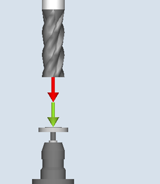
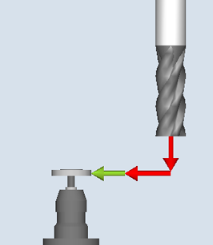
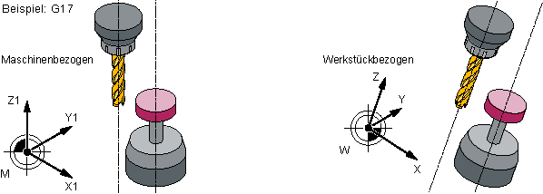
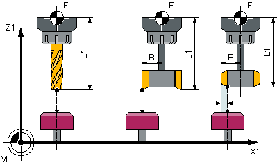
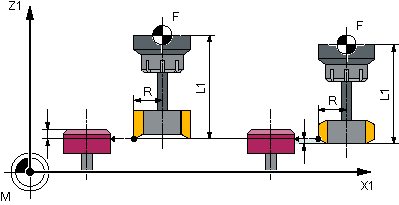
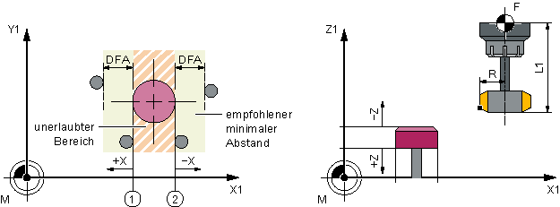

Mit dieser Messvariante kann die Werkzeuglänge oder der Werkzeugradius von Bohrwerkzeugen gemessen werden.
Es wird geprüft, ob die zu korrigierende Differenz zur eingetragenen Werkzeuglänge oder zum eingetragenen Werkzeugradius in der Werkzeugverwaltung innerhalb eines definierten Toleranzbereiches liegt:
Obergrenze: Vertrauensbereich TSA und Maßdifferenzkontrolle DIF
Untergrenze: Nullkorrekturbereich TZL
Bei Einhaltung dieses Bereichs wird die gemessene Werkzeuglänge bzw. der Werkzeugradius in die Werkzeugverwaltung eingetragen, anderenfalls eine Alarmmeldung ausgegeben. Bei Unterschreitung der Untergrenze wird nicht korrigiert.
Das Messen ist wahlweise möglich mit
stehender Spindel (siehe Abschnitt Werkzeugmessung mit stehender Spindel)
drehender Spindel (siehe Abschnitt Werkzeugmessung mit drehender Spindel)
|  Messen: Bohrer (CYCLE971), |  Messen: Bohrer (CYCLE971), |
Der Bohrer muss vor Aufruf des Messzyklus stets senkrecht zum Messtaster ausgerichtet sein. D. h. die Werkzeugachse liegt parallel zur Mittellinie des Messtasters.
Parallele Ausrichtung von Werkzeugachse, Messtasterachse und Achse des Koordinatensystems
Ist der Werkzeugdurchmesser kleiner als der obere Durchmesser des Messtasters, so wird das Werkzeug stets auf die Mitte des Messtasters positioniert.
Ist der Werkzeugdurchmesser größer, so wird das Werkzeug um den Werkzeugradius versetzt zur Mitte auf den Messtaster positioniert. Abzüglich wirkt der Wert des Versatzes.
Wird keine Versetzachse angegeben, wird erforderlichenfalls in der 1. Achse der Ebene (bei G17: X-Achse) versetzt.
Längenmessung ohne und mit Versatz
Der Werkzeugradius wird durch seitliches Antasten an den Messtaster in der parametrierten Messachse und Messrichtung gemessen (siehe folgendes Bild).
Radiusmessung ohne und mit Versatz
| Hinweis |
Der Werkzeugmesstaster muss vor dem Werkzeugmessen kalibriert sein (siehe Abgleich Messtaster (CYCLE971)). |
Die Werkzeuggeometriedaten (ungefähre Werte) müssen in einem Werkzeugkorrekturdatensatz eingetragen sein.
Das Werkzeug muss aktiv sein.
Es muss die Bearbeitungsebene programmiert sein, in der der Messtaster abgeglichen (kalibriert) wurde.
Das Werkzeug muss so vorpositioniert sein, dass ein kollisionsfreies Anfahren durch den Messtaster im Messzyklus möglich ist.
Vor Zyklusaufruf muss eine Startposition eingenommen sein, aus der das Anfahren an den Messtaster kollisionsfrei möglich ist. Der Messzyklus errechnet sich den weiteren Anfahrweg und erzeugt die entsprechenden Verfahrsätze.
① | Allgemeines SD 54626 $SNS_MEA_TP_TRIG_PLUS_DIR_AX1 |
② | Allgemeines SD 54625 $SNS_MEA_TP_TRIG_MINUS_DIR_AX1 |
Abgleich Messtaster (CYCLE971), Startpositionen für den Abgleich in der Ebene
Das Werkzeug steht um den Messweg gegenüber der Messfläche.